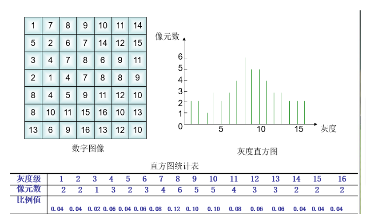

直方图
定义
灰度级范围位[0,L-1]的数字图像的直方图是离散函数

性质
- 1、直方图反映了图像中的灰度分布规律。它描述每个灰度级具有的像元个数，但不包含这些像元在图像中的位置信息。
- 2、任何一幅特定的图像都有唯一的直方图与之对应，但不同的图像可以有相同的直方图。
- 3、如果一幅图像有两个不相连的区域组成，并且每个区域的直方图已知，则整幅图像的直方图是该两个区域的直方图之和
应用
1、对于每幅图像都可做出其灰度直方图。
2、根据直方图的形态可以大致推断图像质量的好坏。由于图像包含有大量的像元，其像元灰度值的分布应符合概率统计分布规律。假定像元的灰度值是随机分布的，那么其直方图应该是正态分布。
3、图像的灰度值是离散变量，因此直方图表示的是离散的概率分布。若以各灰度级的像元数占总像元数的比例值为纵坐标轴做出图像的直方图，将直方图中各条形的最高点连成一条外轮廓线，纵坐标的比例值即为某灰度级出现的概率密度，轮廓线可近似看成图像相应的连续函数的概率分布曲线。
代码示例
1 | import cv2 |
使用掩膜时可以之统计图像中的roi区域，将构建好的区域传入opencv自带的直方图构建函数中即可。
直方图均衡化
当图像的大多数像素点的像素值都集中在一个像素值的范围内，说明图像中的层次不明显，图像中物体分离不明显。例如，如果一幅图片整体很亮，那所有的像素值应该都会很高。但是一副高质量的图像的像素值分布应该很广泛。所以你应该把它的直方图做一个横向拉伸，这就是直方图均衡化要做的事情。通常情况下这种操作会改善图像的对比度。
代码示例
1 | import cv2 |
示例图：
直方图匹配
定义
直方图匹配又称为直方图规定化，是指将一幅图像的直方图变成规定形状的直方图而进行的图像增强方法。即将某幅影像或某一区域的直方图匹配到另一幅影像上。使两幅影像的色调保持一致。可以在单波段影像直方图之间进行匹配，也可以对多波段影像进行同时匹配。两幅图像比对前，通常要使其直方图形式一致。
当一幅图像被描述为直方图后，所有的空间信息都丢失了。直方图描述了每个灰度级具有的像素个数，但无法为这些像素在图像中的位置提供任何线索。即便如此，直方图仍有一些有用的性质：
（1）一个特定的图像有唯一的直方图，但两幅图像的直方图相同并不能说明图像相同。
（2）在图像中特定对象的直方图是平移不变的。
（3）在图像中特定对象的直方图是旋转不变的。
（4）如果一幅图像由两个不连接的区域组成，且每个区域的直方图已知，则整幅图像的直方图是两个区域的直方图之和。显然，该结论可以推广到任何数目的不连接区域的情形。（选自百度百科）